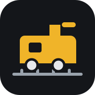

Märklin ESP32
Convierte un ESP32 en el cerebro de tu maqueta: se conecta al bus CAN de la Gleisbox de la Mobile Station 2 y mueve tus trenes de forma automática. Se instala desde aquí en un minuto, ya preconfigurado: red WiFi propia, scripts y maquetas de ejemplo y un asistente que te guía la primera vez.
1. Instalar en el ESP32
- Conecta el ESP32 al ordenador con un cable USB de datos.
- Pulsa el botón y elige el puerto del ESP32 (suele llamarse CP210x, CH340 o USB JTAG).
- Elige Instalar. Tarda un minuto. Si te pregunta, la primera vez acepta borrar el dispositivo.
Funciona con ESP32, ESP32-S3 y ESP32-C3: detecta el modelo solo. Si no aparece ningún puerto, instala el controlador USB de tu placa (CP210x o CH340) y, si hace falta, mantén pulsado el botón BOOT al empezar.
2. Primera puesta en marcha
- Con el móvil, conéctate a la red WiFi Marklin-ESP32 (contraseña
marklin123). La aplicación se abre sola; si no, abre http://192.168.4.1. - Sigue el asistente: comprueba la conexión con la Gleisbox, recoge tus locos, elige tu maqueta y tu WiFi.
- Para tenerla como una app más: en el menú del navegador elige Añadir a pantalla de inicio.
Puedes subir tus maquetas de C-Track Planner (archivo .json o la app sin conexión .html) desde la pestaña Maqueta; allí asignas a cada desvío su dirección y a cada pieza su sensor.
Instalador sin conexión
Si no puedes usar Chrome/Edge: descarga el paquete de tu sistema, descomprímelo, conecta el ESP32 y abre el instalador.
Más información
Código fuente y documentación · Guía de instalación · Lenguaje de scripts · Maquetas de C-Track Planner
Proyecto no oficial, sin relación con Gebr. Märklin & Cie. GmbH.